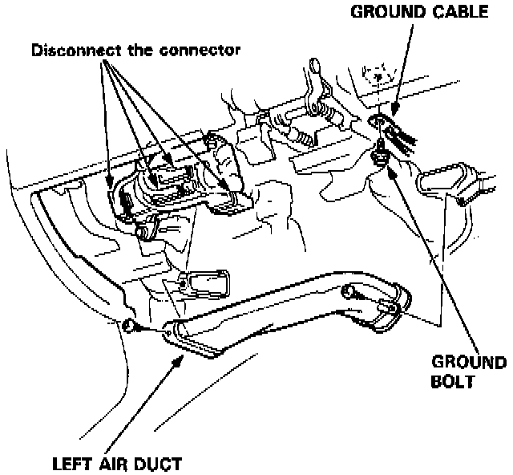
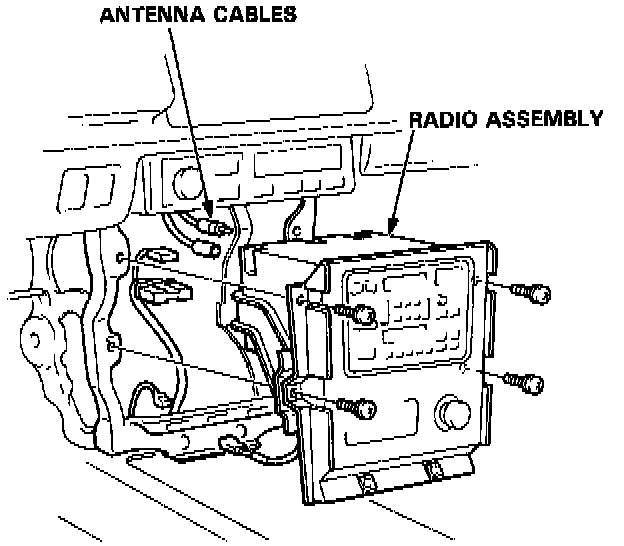
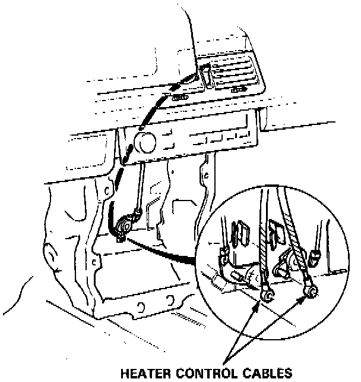
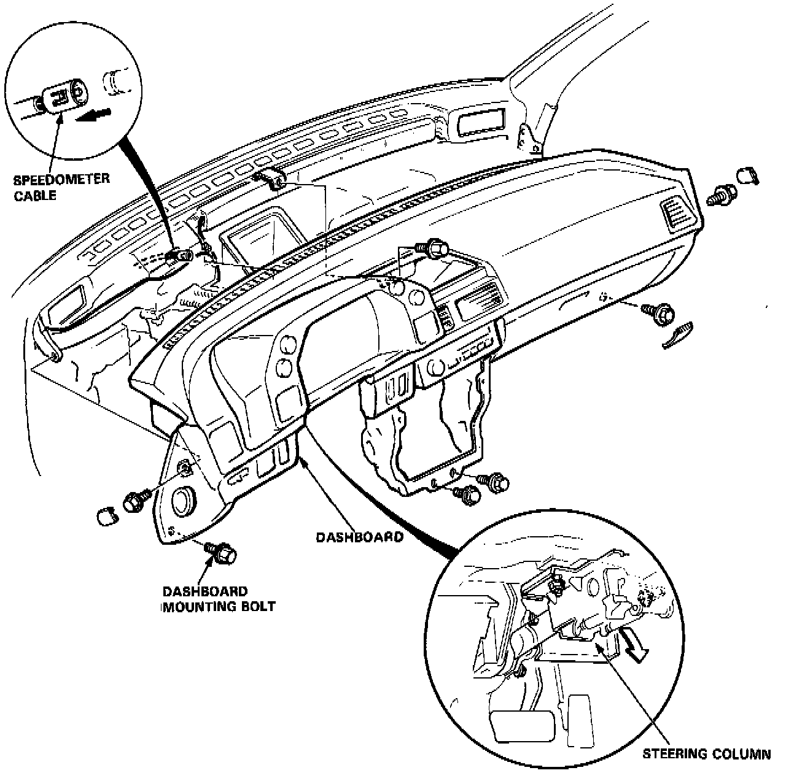

Coupe
DASHBOARD REPLACEMENT1. To remove the dashboard, first remove the:
- Steering wheel.
- Dashboard lower panel.
- Left air duct.
- Hood opener.
- Front console.

2. Disconnect the wire harnesses from the connector holder.
3. Remove the dash harness ground bolt from the steering column.

4. Remove the screws, radio panel then disconnect the wire connectors, antenna cables and wire tie.
5. Remove the radio assembly.

6. Disconnect the heater control cable. (Std.)
7. Remove the center dash pocket.
8. Lower the steering column.

9. Remove the dashboard mounting bolts.
10. Pull the dashboard straight back and disconnect the speedometer cable.
REASSEMBLY NOTE:
- Make sure the dashboard fits onto the body correctly.
- Before tightening the dashboard bolts, make sure the instrument wires are not pinched, and that the dashboard is not interfering with the heater control cable (Std).
- For ease of installation, remove gauge assembly from dash.